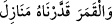

savaş için hazırlanmış olanlar değildir. Tam aksine bunlar a’la ve esfel âlemdeki zâhirî
mülkü tertib etmek, düzene koymak içindir; çünkü göklerde de yerde de Allah’ın
orduları olduğuna göre bunlar kiminle çarpışacaklar. Şu hâlde bu varsayım ihtimal
dışına çıktığına göre geriye kala kala bu “ordular”dan maksad teshir orduları bir başka
ifâdeyle görevli melek orduları olmuş olur. Çünkü âlemin tamamı birbirinin emrindedir
ve bütün melekler bizim emrimize verilmişler, Allah’ın mahlûkat âlemini ellerine
verdiği oniki meleğin emri ve kumandası altındadırlar. Bu oniki meleğin bulunduğu yer
en uzak felektir. Âlemi idâre etmekle görevli olan oniki melekten herbiri herhangi bir
şehrin sur duvarlarındaki burçlar gibi bir burçtadır ve orada bir tahtın üzerinde
oturmaktadır.
Allah meleklerle levh-i mahfuz arasındaki perdeyi kaldırmıştır. Dolayısıyla bu
melekler levh-i mahfuz’da kendi isi ve mertebelerini gösteren satırları görürler. Ayrıca
Allah’ın kıyâmete kadar idâresini ellerine vermeyi dilediği şeyleri görürler. Bütün
bunlar onların ruhlarında yazılıdır. Bunu korunmuş bir ilimle öğrenirler. Bu ilim
değişmez ve değişikliğe uğramaz. Tıpkı bizim onların isimlerini ve durumlarını
kalplerimizin levh-i mahfuz’la karşı karşıya gelmekten dolayı bildiğimiz gibi...
Öte yandan Allah bu görevli meleklerden her birine iki adet bekçi vermiştir. Bunlar
aldıkları emirleri bu meleklerin emrinde olan meleklere iletirler. Her iki bekçi arasına
bir sefir konulmuştur. Bu sefir o iki melek arasında gidip gelerek onların kendisine
verdiklerini iletirler. Allah bu vâli mesâbesindekilere bekçi kıldığı meleklere ikinci
felekte ev vermiştir. Onlar bu evlerde otururlar ve Allah onları oraya indirir. Bu evlerin
bulunduğu yer yirmiikinci menzildir. Allah bunu Kur’an’da zikrederek oraya “menâzil”
ismini verir. Allah şöyle buyurur: “__WORD__/Ay için de bir takım menziller tâyin
ettik.” (Yâsin, 36/39) Yâni kendi seyri ve yürüyüşü esnâsında biz ona menziller tâyin
ettik. Ay her gün bu menzillerden birine iner ve sonunda en son yörüngeye varır. Sonra
dönmesine yeniden başlar. Tâ ki insanlar ayın gökteki yol alışından güneşin seyrinden,
yılların sayısını sayabilsinler, hesaplarını yapabilsinler.
Her şeyi Hak Teâlâ bize açık biçimde açıklamıştır. Bu menzillerde sözünü ettiğimiz
melekler otururlar. Bu melekler felekleri yürütmekle görevli “vâli” meleklerin
bekçileridirler. Öte yandan Allah bu meleklere yedi gökte birer vekil ve başkan tâyin
etmelerini emretmiştir. Dolayısıyla her semâda bir başkan vardır. Tıpkı bu meleklerin
birer bekçileri olduğu gibi. Bunlar orada kendilerine vâli meleklerin verdiği tâlimât
gereği unsuri âlemlerin çıkarını gözetmek için tâyin olunmuşlardır. Ne demek
istediğimizi Allah Kur’an’da şöyle özetler: “Böylece onları iki günde yedi gök olarak
yarattı ve her göğe görevini vahyetti.” (Fussilet, 41/12)
Allah nakib olan bu yıldızların kütlelerini yuvarlak ve ışık verici kütleler olarak
yarattı ve onlara kendilerine âid ruhlarını üfledi ve bunları yedi göğe indirdi. Her birini
bir göğe bıraktı ve onlara: “Bu oniki vâlinin nezdinde bulunanları yirmisekiz hicab
vâsıtasıyla ortaya çıkaracaksınız. Tıpkı vâli olan bu meleklerin levh-i mahfuz’dan